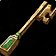
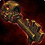

استفاده از کلیدهای Skeleton برای باز کردن درهای قفلشده در Labyrinthها
بازیکنان راهی سریعتر برای باز کردن در قفلشده Labyrinthها پیدا کردهاند که نیازی به جستجوی Keeper of the Key ندارد و فارمینگ دستاورد را بسیار سریعتر میکند.

در هر Labyrinth run، یکی از پنج موقعیت ممکن شامل در قفلشده است که با نماد کلید نقرهای نشان داده میشود. بهجای پیدا کردن Keeper of the Key که 
توصیه میشود همیشه تعدادی 
اتاق قفلشده حاوی Mislaid Treasures برای کسب شهرت و Mislaid Curiosities برای افزایش آمار است.
با داشتن کلیدهای Skeleton میتوانید دو دستاورد Labyrinth را بهراحتی فارم کنید: Lock and Key Master که نیاز به باز کردن ۲۰ Locked Room دارد و A Few More Can't Hurt که با لوت کردن Mislaid Treasures بهدست میآید.
یکی از Spawnهای در قفلشده درست نزدیک ورودی قرار میگیرد. کافی است با Labyrinth Tier ۱ وارد شوید، به Spawn سمت راست بروید، در را چک کنید، اگر وجود داشت با Thalassian Skeleton Key باز کنید، اتاق را لوت کنید و خارج شوید.
اگر در آنجا نبود، فوراً خارج شوید و دوباره امتحان کنید. این روش بسیار سریع است، محدودیت Instance Lockout در ساعت ندارد و به شما اجازه میدهد هر دو دستاورد را در زمان کوتاهی بگیرید.